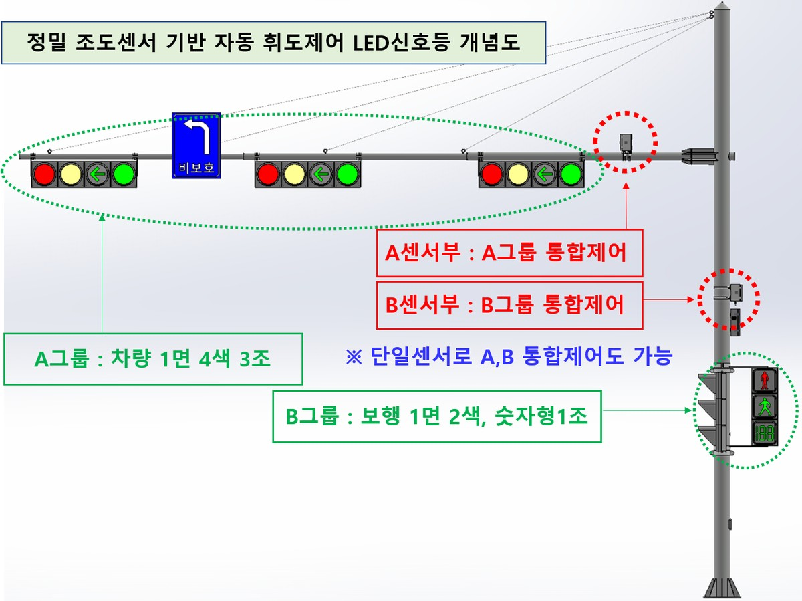
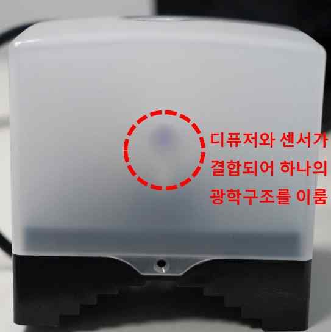
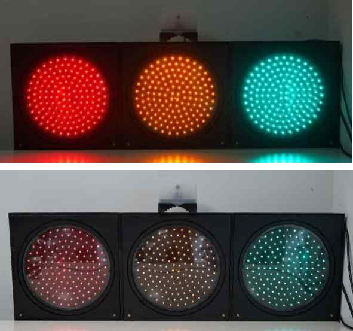
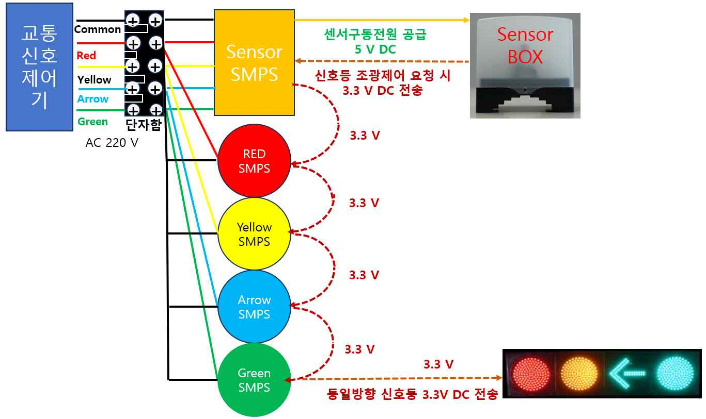
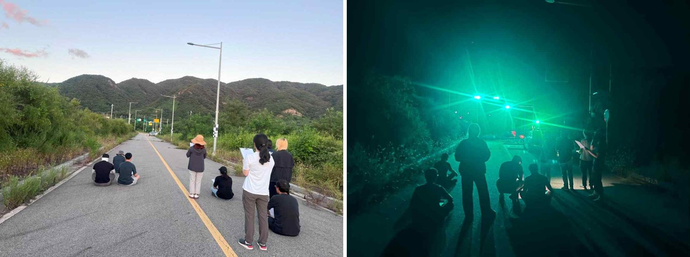

도로교통공단 사내벤처 1호 기업
밤에는 눈부시지 않게,
낮에는 또렷하게.
정밀 조도센서 기반 자동 휘도제어 LED 교통신호등. 교차로의 실제 밝기를 측정해 신호등 밝기를 스스로 맞춥니다. 기존 신호제어기 그대로, 추가 배선 공사 없이 설치합니다.
도로교통공단 사내벤처 1호 기업
정밀 조도센서 기반 자동 휘도제어 LED 교통신호등. 교차로의 실제 밝기를 측정해 신호등 밝기를 스스로 맞춥니다. 기존 신호제어기 그대로, 추가 배선 공사 없이 설치합니다.

왜 필요한가
한낮 기준으로 맞춘 밝기는 야간에 운전자 눈부심과 주거지 빛공해 민원으로 이어집니다. 조광제어의 필요성은 오래전부터 제기되어 왔지만, 저가 센서는 부정확하고 정밀 조도계는 비싸며, 제어기 반파 방식은 다른 안전시설까지 바꿔야 해서 현장에 확산되지 못했습니다.
어떻게 작동하나
큐빅형 디퓨저 박스 안의 조도센서가 2방향 이상에서 밝기를 측정해 교차로를 대표하는 조도값을 산출합니다. 태양이나 주변 조명 한 방향에 휘둘리지 않습니다.

대표조도를 기준으로 같은 방향의 적·황·화살·녹 신호등을 한 번에 제어합니다. 신호등마다 센서를 달 때 생기는 밝기 편차가 없습니다.

신호등 내부의 Sensor SMPS가 순차 점등 전원을 다이오드 OR-ing 방식으로 결합해 상시 전원을 만듭니다. 기존 제어기와 배선을 그대로 씁니다.

센서부가 고장 나더라도 신호등은 일반 신호등처럼 주간 밝기로 정상 점등됩니다. 현재는 경찰청 규격에 따라 주·야간 2단계로 납품하며, 기준이 세분화되면 핵심기술 변경 없이 다단계 제어로 전환할 수 있습니다.
| 구분 | 일반 신호등 | 반파 적용 신호등 | CdS 센서 신호등 | 라이트로드 |
|---|---|---|---|---|
| 조광제어 방식 | 없음 | 전원 반주기 이용 | 개별 센서 감응 | 실측 외부조도 기반 자동제어 |
| 다른 안전시설 수정 없이 사용 | 해당 없음 | 불가 (수정 필수) | 가능 | 가능 |
| 한 방향 신호등 동시제어 | 불가 | 가능 | 불가 (밝기 불균형) | 가능 |
| 실시간 대응 | 불가 | 불가 | 가능 | 가능 |
| 센서 정확도 (f1′ 8% 이내) | 해당 없음 | 해당 없음 | 미충족 (약 20~60%) | 충족 (7.9%) |
시험·인증
| 항목 | 결과 | 기관 · 번호 |
|---|---|---|
| 경찰청 표준규격(R02) 성능시험: 호환성·환경·내구성·전기·광학·조광제어 | 전 항목 적합 | 키엘연구원 KIEL2607-F07853~F07858 |
| 전자파 적합성: 잡음단자전압·잡음전계강도·뢰 임펄스 | 적합 | E26KR-2127, KIEL2606-KF07134~KF07139 |
| 조도센서 상대분광응답도 f1′ | 센서+디퓨저 7.9% / 센서 6.2% | 260416AJ65, JICS-703-N260001 |
| 교차로 그룹 동시제어 | 단일 센서로 3색 동시 제어 확인 | 도로교통공단 KOROAD-G2026-B21-0001 |
| 외함 재질: 인장강도·충격강도·하중변형온도·난연성 | 62.5 MPa, 29 kJ/m², 93℃, V-0 | CT25-087120K |
| Cut-off 상태 임피던스 (기준 10 kΩ 미만) | 7.2 kΩ | 키엘연구원 |
| 방송통신기자재 적합등록, 직접생산확인 | 보유 | 직접생산 제2026-0447-00316호 |
2024년 7월 25일부터 8월 31일까지 약 35일간 실제 교차로 환경에서 운영했습니다. 측정 조도는 한국천문연구원의 일출·일몰 시각과 일치했고, 맑음·흐림·비 등 기상 조건별로 안정적으로 작동했습니다.
피험자 눈부심 평가(5점: 매우 눈부심, 3점: 적당함)에서 야간에 주간 밝기를 그대로 쓰면 4.1~4.5점, 주간 대비 42% 수준으로 낮추면 3.2점으로 적정하다는 결과를 얻었습니다.

경제성
지주 1개에 차량용 1면 4색 3조, 보행용 1면 2색 1조, 적·녹 숫자형 보행보조장치 1조, 조도센서부 2조를 설치하는 경우의 예상 금액입니다.
LED 수명 연장은 구동전류 저감에 따른 이론값(약 3.5배) 대신 30%만 보수적으로 반영했습니다.
도입 안내
나라장터 등록: [물품식별번호 기재]
혁신제품 지정: [지정번호 기재]
기존 신호제어기 호환. 설치비는 일반 신호등과 같습니다. 조도센서부는 통상 지주 1개에 차량용·보행용 각 1대를 권장하며, 인공광원이 직접 비치는 곳은 피해 설치합니다.
3년 이내 무상. 3~10년은 부품비·출장비 실비만 받고 별도 이윤은 없습니다. 정기점검이나 소모품 비용은 없습니다.
빛공해 민원이 잦은 교차로를 대상으로 지자체와 함께 시범 운영을 진행합니다. 에너지 절감과 정상 작동, 운전자·보행자 판독성을 함께 평가합니다.
자료실
회사소개
㈜라이트로드는 도로교통공단 사내벤처 1호로 출발해 2023년 12월 설립했습니다. 스마트 도로교통안전시설을 연구·개발·제조합니다.
문의
전화나 이메일로 연락 주시면 담당자가 바로 회신드립니다.